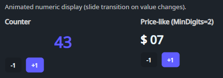

DaisyAnimatedNumber is a numeric text display that animates value changes with a vertical slide transition. It's useful for counters, KPIs, and any UI where you want motion feedback when the number updates.
| Property | Description |
|---|---|
Value (int) |
Current displayed value. When it changes, the control animates from the previous value to the new value. |
MinDigits (int) |
Minimum digit count; pads with leading zeros (e.g. 7 → 07). |
Duration (TimeSpan) |
Animation duration (default 250ms). |
SlideDistance (double) |
Pixel distance the text slides during the transition (default 18). |
DaisyAnimatedNumber also supports standard text styling properties like Foreground, FontSize, and FontWeight.
<!-- Basic counter -->
<controls:DaisyAnimatedNumber Value="{Binding Count}" FontSize="28" FontWeight="Bold" />
<!-- Fixed width with leading zeros -->
<controls:DaisyAnimatedNumber Value="{Binding Seconds}" MinDigits="2" FontSize="20" />
<!-- Slower / longer slide -->
<controls:DaisyAnimatedNumber Value="{Binding Score}"
Duration="0:0:0.4"
SlideDistance="28" />MinDigits to avoid layout jitter when the digit count changes (e.g. 9 → 10).SlideDistance relative to FontSize (larger text typically wants a larger slide distance).